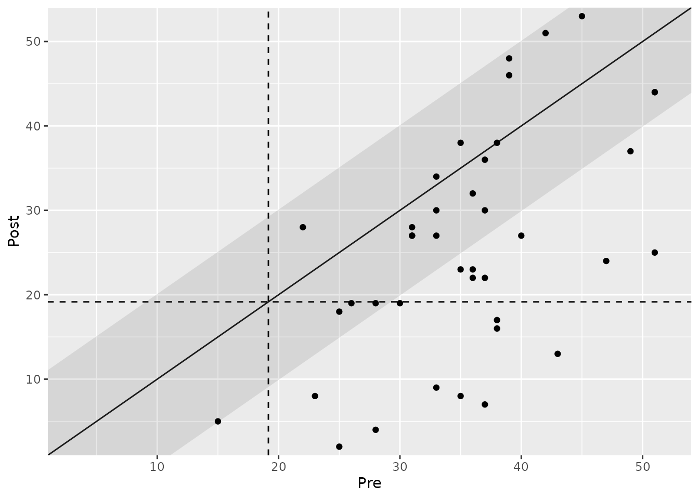
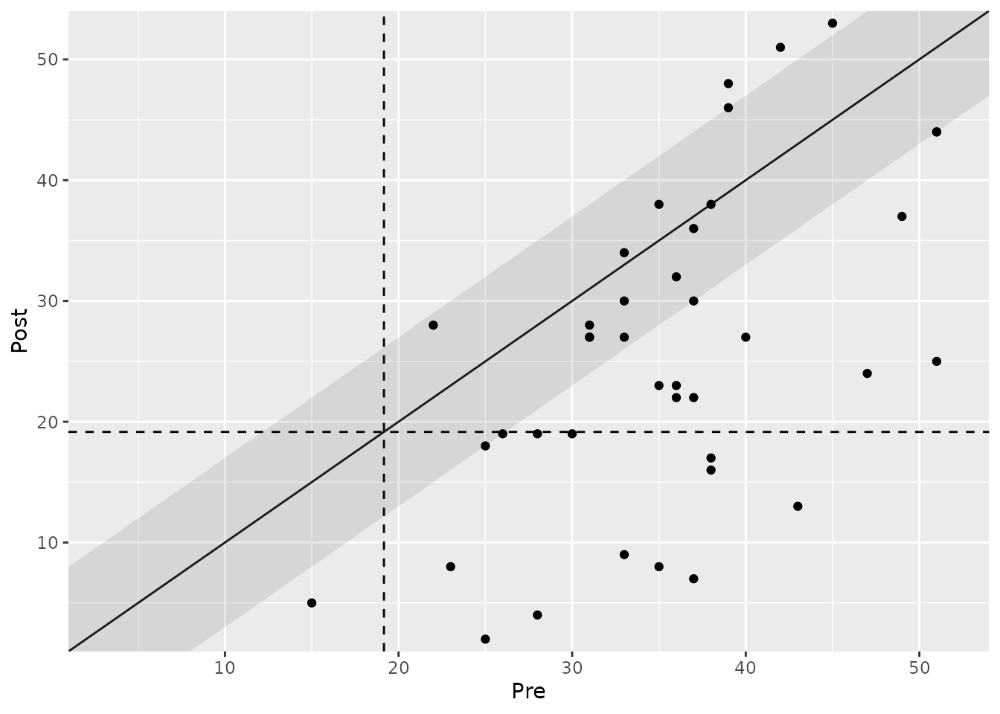

Analyzing Clinical Significance: The Combined Approach
2025-11-27
Source:vignettes/combined-approach.Rmd
combined-approach.RmdIntroduction
The combined approach represents the most rigorous method for assessing clinical significance. It provides a more nuanced picture of patient outcomes by requiring two criteria to be met simultaneously:
- Magnitude of Change: The change must be sufficiently large, either by being statistically reliable (distribution-based) or practically meaningful (anchor-based).
- End-State Functioning: The patient must cross the threshold from a dysfunctional or “clinical” population to a functional or “non-clinical” one (statistical approach).
This dual requirement allows for a richer classification of outcomes,
distinguishing between patients who have merely “Improved” and those who
have truly “Recovered”. This vignette demonstrates how to use the
cs_combined() function to apply these powerful models.
The Classic Jacobson & Truax (JT) Approach
The most common combined method, proposed by Jacobson and Truax (1991), integrates the distribution-based and statistical approaches. A patient’s change is considered clinically significant if:
- The change is reliable (i.e., it exceeds the measurement error of the instrument).
- The patient’s final score falls within the range of a functional population.
Example Analysis
We will again use the claus_2020 dataset. To perform
this analysis, we need summary statistics for a functional
(non-clinical) population on the BDI-II (m_functional,
sd_functional) and an estimate of the instrument’s
reliability.
# Perform the JT combined analysis
jt_combined <- claus_2020 |>
cs_combined(
id = id,
time = time,
outcome = bdi,
pre = 1,
post = 4,
m_functional = 7.69,
sd_functional = 7.52,
reliability = 0.801
)
# Display the summary of results
summary(jt_combined)
#>
#> ---- Clinical Significance Results ----
#>
#> Approach: Distribution-based
#> RCI Method: JT
#> N (original): 43
#> N (used): 40
#> Percent used: 93.02%
#> Outcome: bdi
#> Cutoff Type: a
#> Cutoff: 19.16
#> Outcome: bdi
#> Reliability: 0.801
#>
#> -- Cutoff Descriptives
#>
#> M Clinical | SD Clinical | M Functional | SD Functional
#> -------------------------------------------------------
#> 35.48 | 8.16 | 7.69 | 7.52
#>
#>
#> -- Results
#>
#> Category | N | Percent
#> ---------------------------
#> Recovered | 10 | 25.00%
#> Improved | 8 | 20.00%
#> Unchanged | 22 | 55.00%
#> Deteriorated | 0 | 0.00%
#> Harmed | 0 | 0.00%Visualizing the JT Approach
The plot for a combined analysis is particularly informative. It includes both the shaded area for reliable change (from the distribution-based approach) and the cutoff lines for population status (from the statistical approach).
- Dashed Lines: The cutoff separating the clinical (right/top) and functional (left/bottom) populations.
- Shaded Area: The zone of “no reliable change”.
plot(jt_combined, show_group = "category")
#> Ignoring unknown labels:
#> • colour : "Group"
The resulting categories are interpreted as follows: - Recovered (blue): Patients who showed a reliable improvement and ended up in the functional range. - Improved (light green): Patients who showed a reliable improvement but remained in the clinical range. - Unchanged (yellow): Patients with no reliable change, regardless of their population status. - Deteriorated (orange): Patients who showed a reliable worsening but remained in the clinical range. - Harmed (dark green): Patients who showed a reliable worsening and moved from the functional to the clinical range.
The Claus, Wager & Bonnet (CWB) Approach
As an alternative, clinicalsignificance allows you to
combine the anchor-based and
statistical approaches. This method is useful when a
well-established Minimal Important Difference (MID) is available and may
offer a more practically interpretable criterion for change than
statistical reliability.
Here, a patient’s change is clinically significant if: 1. The change is meaningful (i.e., it meets or exceeds the MID). 2. The patient’s final score falls within the range of a functional population.
Example Analysis
We use the same functional population data as before but replace the
reliability argument with mid_improvement.
# Perform the anchor-based combined analysis
anchor_combined <- claus_2020 |>
cs_combined(
id = id,
time = time,
outcome = bdi,
pre = 1,
post = 4,
m_functional = 7.69,
sd_functional = 7.52,
mid_improvement = 7
)
# Display the summary of results
summary(anchor_combined)
#>
#> ---- Clinical Significance Results ----
#>
#> Approach: Distribution-based
#> RCI Method: CWB
#> N (original): 43
#> N (used): 40
#> Percent used: 93.02%
#> Outcome: bdi
#> Cutoff Type: a
#> Cutoff: 19.16
#> Outcome: bdi
#> MID (Improvement): 7
#> MID (Deterioration): 7
#>
#> -- Cutoff Descriptives
#>
#> M Clinical | SD Clinical | M Functional | SD Functional
#> -------------------------------------------------------
#> 35.48 | 8.16 | 7.69 | 7.52
#>
#>
#> -- Results
#>
#> Category | N | Percent
#> ---------------------------
#> Recovered | 13 | 32.50%
#> Improved | 12 | 30.00%
#> Unchanged | 11 | 27.50%
#> Deteriorated | 4 | 10.00%
#> Harmed | 0 | 0.00%Notice the subtle shift in classifications: with the MID as the criterion, more patients are categorized as “Improved” or “Recovered” compared to the stricter reliability criterion of the JT approach in this specific example.
Visualizing the CWB Approach
The plot is interpreted similarly, but the shaded area is now defined by the MID instead of the Reliable Change Index.
plot(anchor_combined, show_group = "category")
#> Ignoring unknown labels:
#> • colour : "Group"
Summary and Next Steps
The combined approach offers a powerful and nuanced assessment of treatment outcomes by considering both the magnitude of change and the patient’s final functional status.
- The Jacobson & Truax (JT) approach is the classic standard, requiring a reliable change and a shift in population status.
- The Claus, Wager & Bonnet (CWB) approach is a valuable alternative when a meaningful MID is known, defining change in practical rather than purely statistical terms.
Choosing between them depends on the available information (reliability vs. MID) and the specific research question.